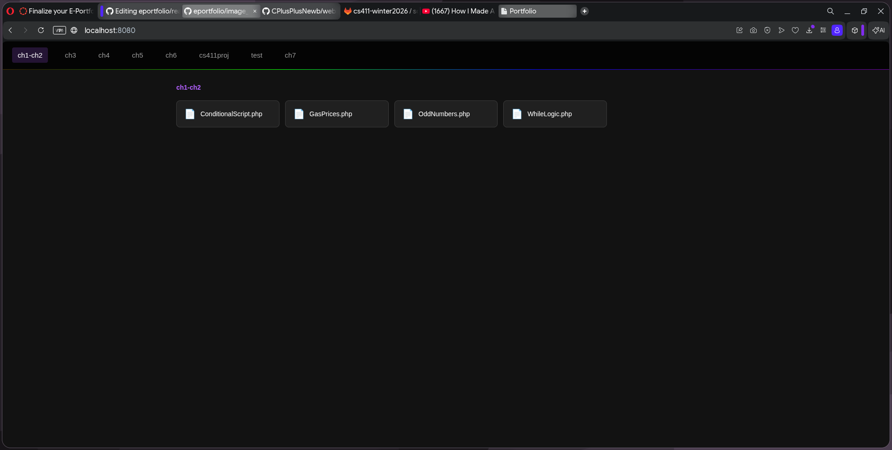
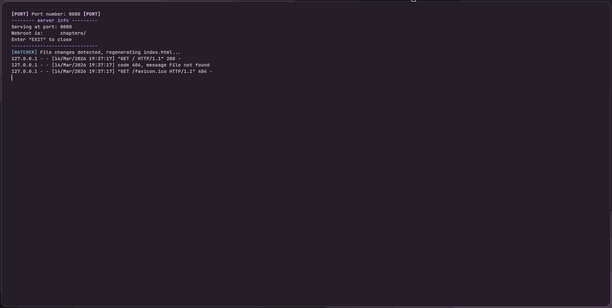

A file manager that runs in the browser, served from a local Python server. You can browse and view files through a web UI without needing any real hosting setup. The page refreshes itself when files change on the back end.
This one taught me a lot about getting Python and PHP to work together, and how serving files locally actually works under the hood. I learned more about HTTP requests and file I/O than I expected going in.

A Python script I made that, if there's no index.html in the current folder, automatically creates index.html, style.css, and scripts.js for you. No templates, no setup, just run it and go.
Having to generate valid HTML/CSS/JS from scratch in Python made me really think about how those files are structured. It was a good exercise in file I/O and automation.

A messageboard website built as a team Scrum project. I handled the style.css, set up the file structure on GitLab, and wrote the feed function that reads from the database file and builds the post feed dynamically.
Working in a real team with Scrum was different from anything I'd done before. I got comfortable trusting teammates to handle their parts, and I learned a lot about how splitting up a project actually works in practice.
Stand-ups were actually really useful for catching problems early. The hardest parts were merge conflicts when multiple people touched the same files, and we definitely overscoped a couple Sprints.
A couple of database assignments where I designed tables, wrote queries, and worked with real relational data. The files are in the databases/ folder of this repo.
Built a small database called norskog with a customer table and an order table linked by a foreign key on customerid. Inserted sample records and wrote SELECT queries to verify the data.
Wrote queries against a vacation rental database with guests, properties, and reservations. Used a JOIN between the reservations and properties tables to calculate cost-per-person per stay, and ran aggregate functions to find min, max, and average nightly rates. Also did an UPDATE on a guest record and created a backup table using CREATE TABLE AS SELECT.
Outside of class I've configured my own home network and set up a Raspberry Pi 3+ running Pi-hole as a network-wide DNS-based ad blocker. Every device on the network routes DNS requests through the Pi, which filters out known ad and tracking domains before they ever reach a device.
I'm able to provide my apartment roomates with a ad-free streaming network without having to pay premiums for the same thing
Setting this up taught me a lot about how DNS actually works, how routers handle traffic, and how something as simple as blocking at the DNS level can have network-wide effects. It also got me comfortable working with Linux on a headless device over SSH.
Same project as above, but this covers the process side of it rather than the code. Our team ran the messageboard project using Scrum — we had defined roles, ran Sprints, and held stand-ups throughout development.
The team was ran by splitting each person into teams for seperate tasks each sprint to break down the work into bite sized chunks along with having multiple personalitys on one part of the project
finding time to talk about the project became a hassle
I would try and communicate better and maybe do something more on my part to keepm track of what i was supposed to be doing and when and not get side tracked by other class's homework
cs411-winter2026/socialmedia-messageboardAn AI chatbot scoped entirely to Escape from Tarkov — it answers questions about ammo, quests, maps, bosses, traders, and loadouts, and refuses anything off-topic. Powered by llama-3.3-70b via Groq, with a custom terminal-themed Gradio UI.
This project got me into working with LLM APIs and prompt engineering for the first time. I learned how to ground an AI response in live data by scraping the Tarkov wiki directly for ammo tables, and how to build guardrails to keep the model on-topic using both keyword filtering and output validation.
A full-stack PHP web app for managing student course schedules. Students can view their schedule by term, browse the course catalog, and get suggested revised schedules if they've missed a class. Advisors can manage all students, update enrollment statuses, and add courses on their behalf.
This was my first time building a full multi-role web app from scratch with no framework. I got a lot of hands-on experience with session management, relational database design, and how to structure PHP across multiple pages. Building the prerequisite enforcement and auto-rescheduling logic was the most challenging and rewarding part.
real_escape_string on user input, with prepared statements as a planned improvement. File uploads are validated by MIME type and capped at 2MB.What I've learned so far
- Building web UIs and making them actually work
- Running local servers and understanding how they work
- Working in a team using Scrum/Agile
- File I/O, automation, and basic security practices
- Working with LLM APIs, prompt engineering, and AI guardrails
- Full-stack PHP development with MySQL and role-based access control